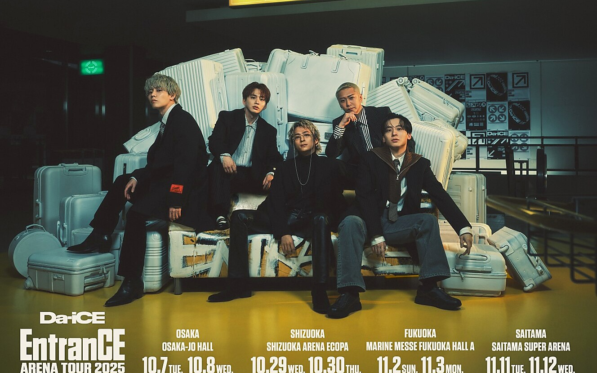
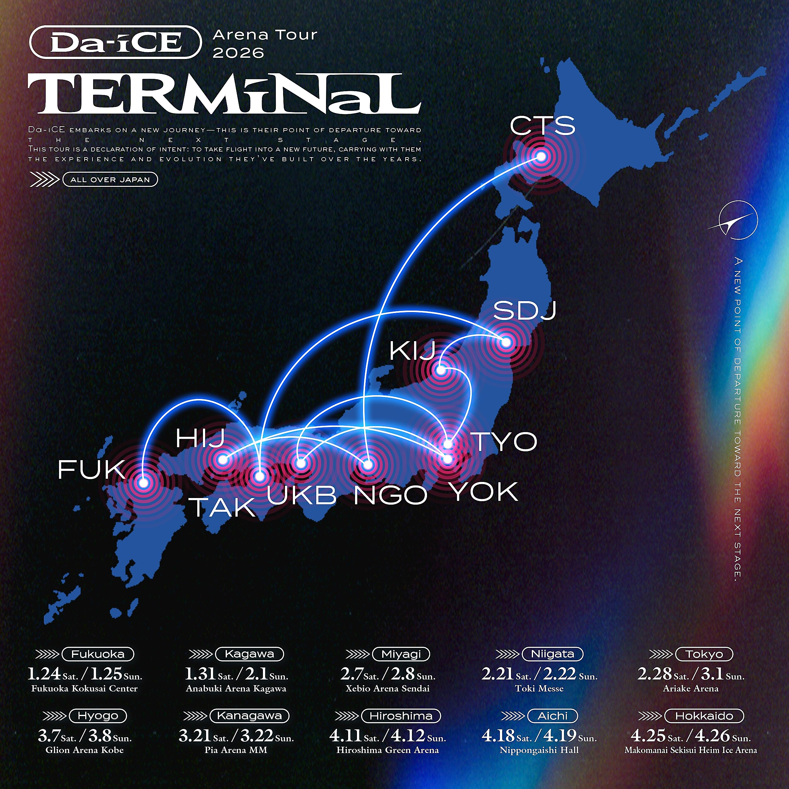
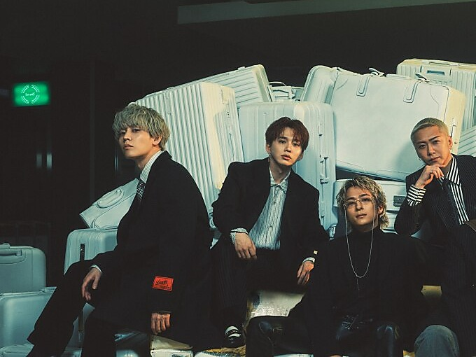
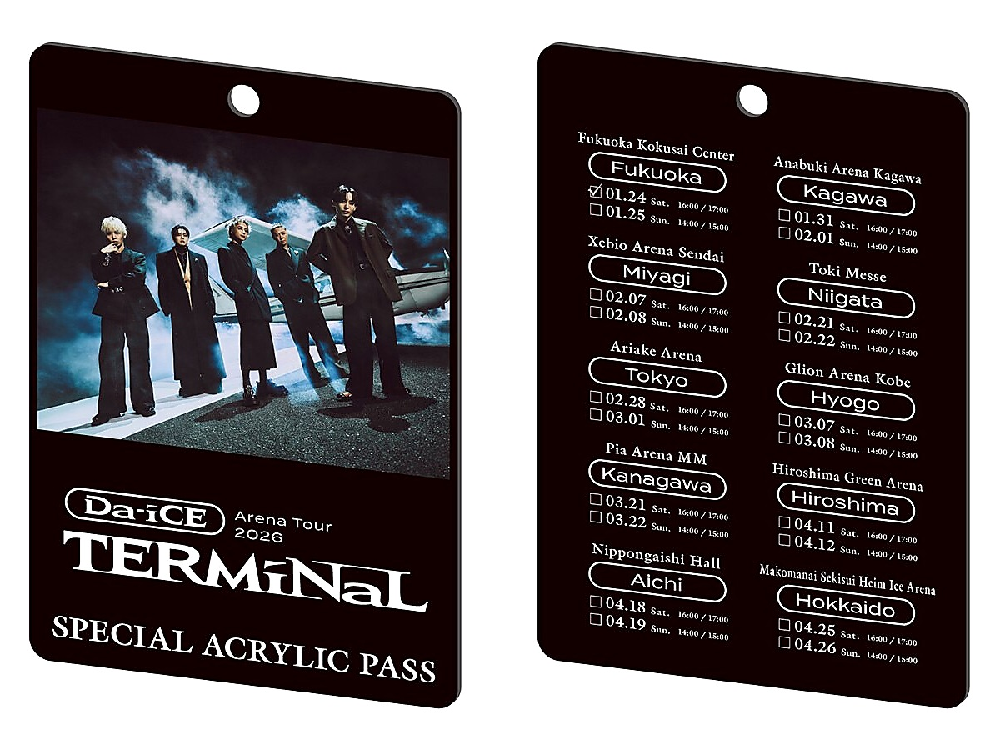
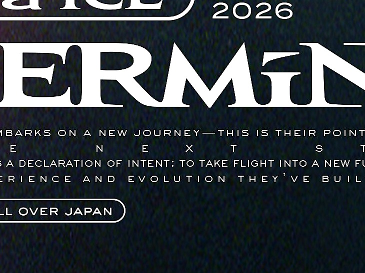
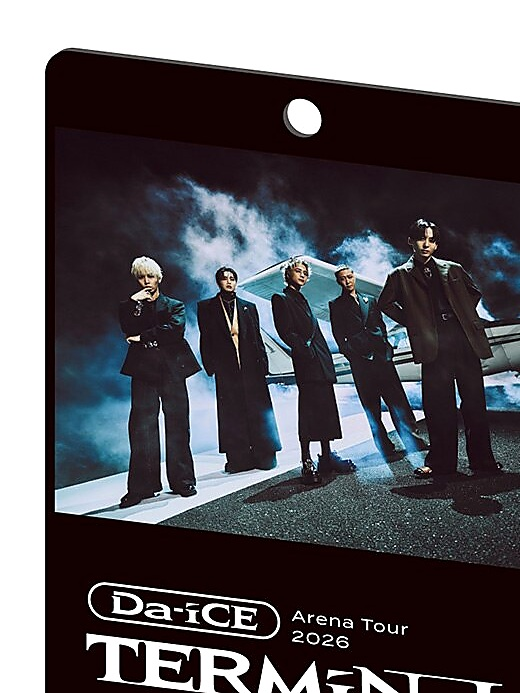
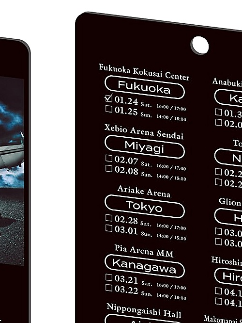

2019
FIVE DIMENSIONS PRESENTS
LIVEMUSEUM
EXPERIENCE THE STAGE / TRACE THE HISTORY
LIVE ARCHIVE / VER. 6.3
ENTER
THE LIVE
Da-iCEのライブは、ただ曲を披露する場所ではない。時代ごとのコンセプト、照明、映像、ダンス、二つの声が交差し、その瞬間だけの物語を作る。まずは6つのツアーから、その歩みをたどります。
2022
2023
2024
2025
2026
OFFICIAL DATA VERIFIED
SCALE
PERIOD
STATUS
MEDIA
CITIES
SHOWS
EXPERIENCE MAP
CONCEPT FLOWARCHIVE POINTS
KEY FACTSOFFICIAL SCHEDULE
TOUR ROUTE
OFFICIAL RELEASE / TOUR ARCHIVE
VIEW OFFICIAL DETAILS ↗PRICE / FORMAT
EntranCE → TERMiNaL
“入口”から“再出発点”へ続く、2025–2026年の連続したライブストーリー。
公演日・会場・開場開演時刻・価格・商品情報は公式サイト掲載内容をもとに構成しています。EXPERIENCE MAPは正式セットリストではなく、ライブの世界観を整理したファンサイト独自の編集表示です。
TERMiNaL / TOUR ROUTE EXPERIENCE / VER. 6.3
THE ROUTE
TO THE FUTURE
福岡から北海道へ。10都市20公演を、開催順に光が走るインタラクティブマップで追体験。都市を選ぶと、その会場と日程がステージ情報として立ち上がります。
NJAPAN / 2026
FUKUOKAHOKKAIDO
OFFICIAL VISUAL ARCHIVE / VER. 6.2
LIVE
GALLERY
公式サイトで公開されたツアービジュアルを中心に、全景・メンバー・ツアールート・限定プレートパスを展示。写真をクリックすると全画面で細部まで見ることができます。

EntranCE / OFFICIALOFFICIAL TOUR VISUAL

TERMiNaL / OFFICIALTOUR ROUTE

EntranCE / MEMBERSTHE FIVE

TERMiNaL / ITEMSPECIAL ACRYLIC PASS

TERMiNaL / ROUTEALL OVER JAPAN
EntranCE / DETAILCREAT & EXPAND

TERMiNaL / PASSFRONT SIDE

TERMiNaL / PASS20 DESTINATIONS
Images: Da-iCE Official Website / Official Tour Visuals. 各画像の権利は権利者に帰属します。公式サイトを見る ↗